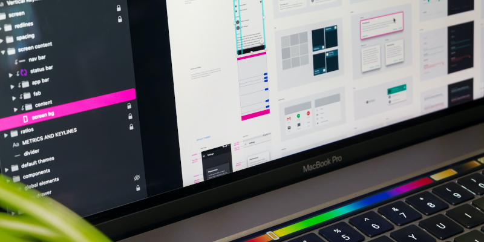

UX/UI Design
2021-04-20

After many years working as a UI Developer I burnt out writing code.
To fix this problem I spent the majority of 2018 improving my UX/UI Design skills by reading books and taking video courses.
My goal was to switch my day job from UI Development to UX/UI Design. I finally accomplished that goal January 4th, 2021. I'm much happier as a UX/UI Designer.
You may be wondering, "What exactly is a UX/UI Design?"
Let's start with what UX/UI Design is NOT!
- Front-End / UI Develoment which includes HTML, CSS, and JavaScript
- Social Media or Email Marketing
- KPI’s (Key Performance Indicators)
- Technical or Copy Writing
- Google Analytics
- SEO (Search Engine Optimization)
User Experience Design and User Interface Design are two related, and often confused, professions that play a vital role in software development.
UX Design
UX stands for User Experience. A UX Designer does research and plans how something looks and works. To make using it easy and enjoyable.
UI Design
UI stands for User Interface. A UI Designer creates the visual interface of digital products like web sites and mobile apps.
The main tool I use is Adobe XD. Its a stand alone vector-based desktop application in the family of Photoshop and Illustrator. Available for Mac and Windows.
It gives UX/UI Designers the ability to create mockups and interactive prototypes for web and mobile apps. These designs are used as blueprints by Front-End / UI Developers for building web applications.
Education
After spending years as a front-end web development. I had a good level of skill with design software like Photoshop and Illustrator. Learning Adobe XD didn't take long.
I improved my existing design knowledge using free online sources: Learn UX Design